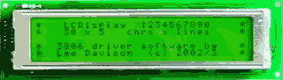
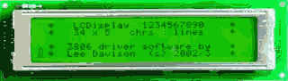
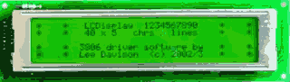
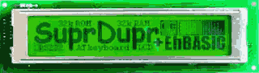

|
|
LCD port driver by Lee Davison |
|
The SuprDupr has a port wired to enable use of many inteligent LC displays. The display, pictured right, is an LC7980 type though most of the other graphics and text types are similarly driven.
One change needed to be made to the SuprDupr to use this display and that was to disconnect the earthy end of the contrast pot from 0v and connect it to the -ve charge pump output on the MAX232 chip. This is because the greater multiplex on these graphics displays requires a more -ve bias to maintain the viewing angle.
A down side to this is that display contrast is effected by the loading on the RS232 port and use of such things as a RS232 line monitor can have an adverse effect on the display. Also if the load from the display is to great then the MAX232 charge pump will not start. However this should not be a problem in normal use.
Another change made to the SuprDupr was to wire +12v to the spare pin on the LCD port to provide power for the backlight. This could be connected through a PNP transistor and controlled by software via one of the port pins.
Software.
The sourceThe software is unfinished and provided as a starting point for anyone who wishes to make their own. It is usable and was used to produce the displays pictured above and below.
View or downloaddriver .asm file
| Example displays | |
|  |  |
|  |  |
| Last page update: 28th April, 2004. | e-mail me
 |